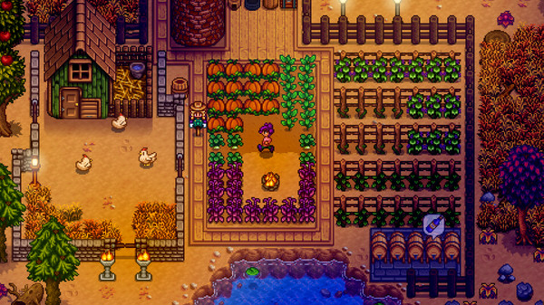
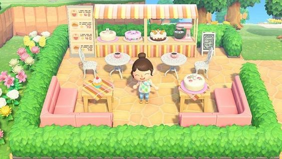
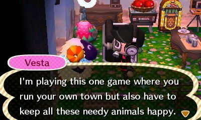
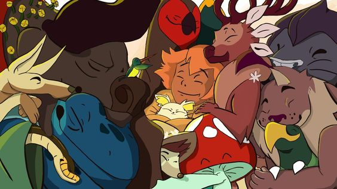
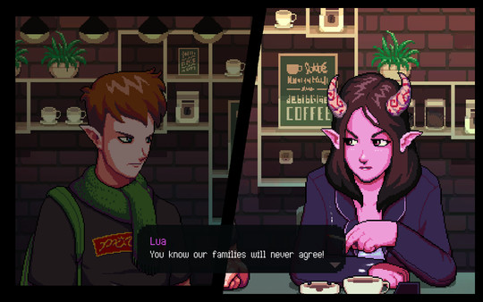

La presentación se irá reproduciendo sola. Si el ritmo es muy rápido para ti, es recomendable que la vayas deteniendo y uses el mando en la esquina derecha para avanzar entre secciones.
Dando a ESC puedes ver la presentación al completo. Desde esta vista, puedes usar la barra de búsqueda.
Clickando "S" puedes acceder al Speaker View y visualizar el tiempo de presentación con las notas.
Son un tipo de videojuegos que se caracterizan por tener una temática relajante y agradable. Se enfocan en crear
una experiencia acogedora y reconfortante para el jugador.
Este género de juegos suelen tener una jugabilidad sencilla y fácil de entender, con mecánicas que no requieren de
habilidades especiales y que se pueden jugar de forma casual.
Tienen su enfoque en la relajación y el bienestar emocional del jugador, lo que los convierte en una opción ideal para aquellos que buscan una experiencia de juego más tranquila
y menos estresante.
Stardew Valley
Además de la agricultura, el jugador puede interactuar con los personajes del pueblo, realizar misiones, pescar, explorar minas y participar en festivales locales. El juego también incluye elementos de RPG, con la capacidad de mejorar habilidades y equipar herramientas y armas.  El juego también ha sido elogiado por su inclusión y representación de personajes LGBTI+ y por su enfoque en la comunidad y la cooperación en lugar de la competencia.
Animal Crossing
Es conocida por su estética atractiva y relajante, con gráficos coloridos y una banda sonora encantadora. Los personajes de la serie también son muy queridos por los fans, con personalidades únicas y a menudo divertidas que hacen que interactuar con ellos sea divertido y entretenido. 
El jugador asume el papel de un personaje humano que se muda a un pueblo de animales.
El jugador debe interactuar con los aldeanos, realizar tareas y actividades diarias.
El juego sigue un horario en tiempo real y las actividades cambian según la hora del día y la estación del año.

Spiritfarer
Destaca por su narrativa emotiva y sus personajes profundos y bien escritos. El juego explora temas como la muerte, la pérdida y la aceptación, y presenta un enfoque delicado y reflexivo en su representación de estos temas. 
Presenta mecánicas de juego variadas: como la exploración de islas, la pesca, la minería y la fabricación de objetos dentro del barco, donde se desarrolla una fuerte sensación de comunidad.
Monument Valley
Es conocido por su estética única con mezcla de elementos de la arquitectura islámica, la op art y el arte moderno. El jugador juega con la perspectiva para hacer que Ida avance.
Coffee Talk
Aborda temas como el amor, la amistad, la identidad y la inclusión.
El jugador puede interactuar con los personajes y escuchar sus historias, pero no tiene control sobre el resultado de las mismas.

Con una banda sonora de jazz y una paleta de colores cálidos y suaves, el juego cuenta con una serie de referencias a la cultura pop, lo que lo convierte en una experiencia atractiva para los fans de la cultura geek.